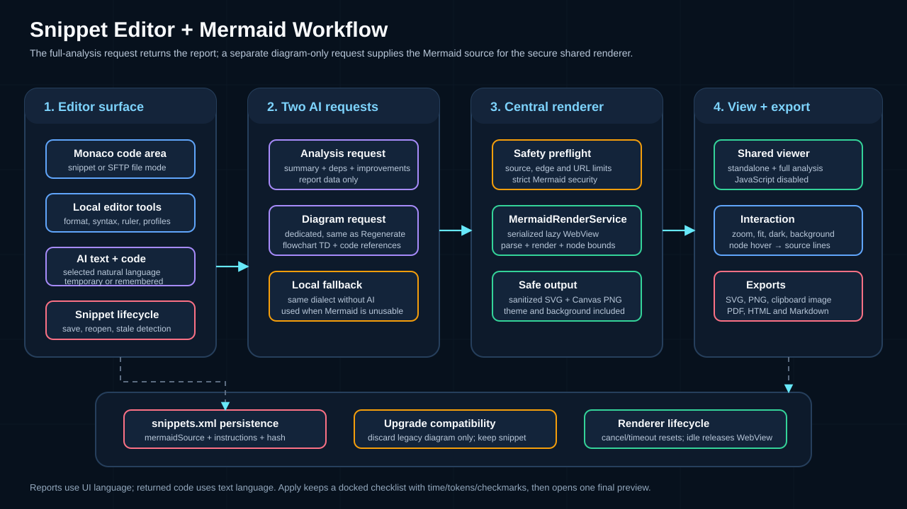
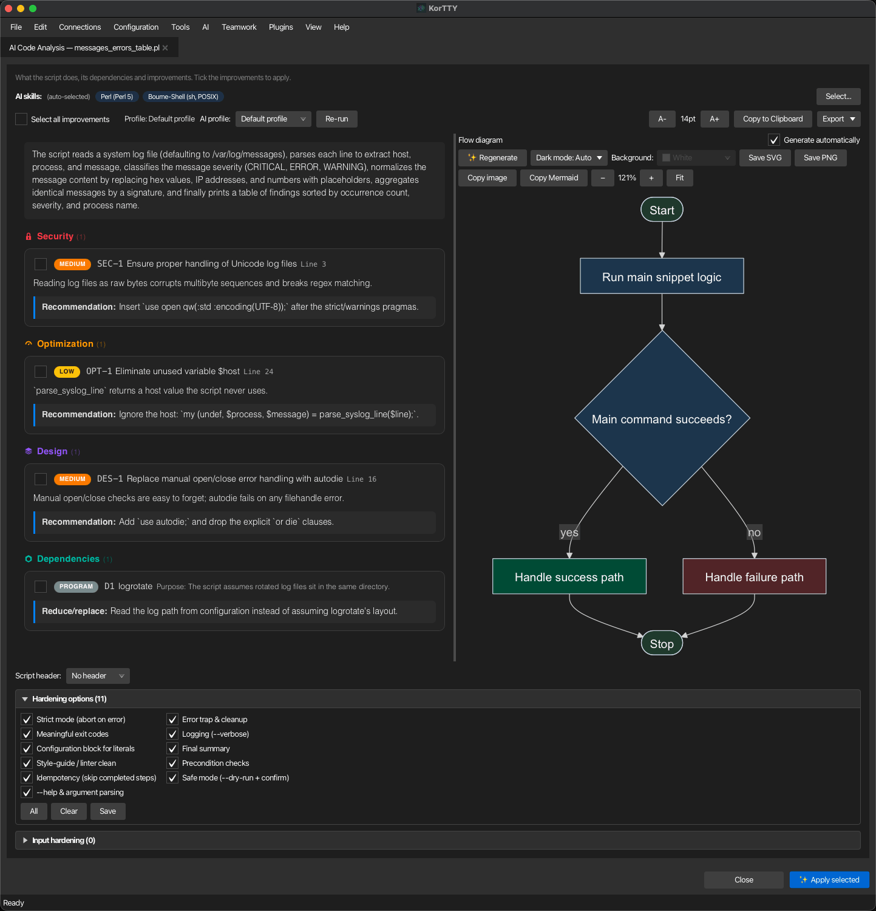

Snippet manager¶
The Snippet Manager lets you store, organize, and quickly insert reusable code snippets, scripts, and configuration templates. Manage snippets across multiple languages with syntax highlighting, advanced search, AI-assisted editing, placeholder variables, and flexible export options.
Overview¶
The Snippet Manager includes the following features:
- System (OS) column — A sortable operating-system column for each snippet (Any, Linux, macOS, Windows). Auto-set when a snippet is created via Generate Workflow Script.
- Sortable columns — All columns (Name, Language, Category, System, Tags) are sortable.
- Script-Header category — A fixed, non-deletable category containing reusable header templates for workflow-script generation.
Opening the Snippet Manager¶
- Menu: Tools → Snippet Manager
- Shortcut: Ctrl+Shift+S (Cmd+Shift+S on macOS)
Creating and editing snippets¶
- Click Add (or Edit to modify an existing snippet).
- Fill in the fields:
- Name — A descriptive name.
- Code language — Select the programming language (Bash, Python, Java, JavaScript, TypeScript, SQL, XML, JSON, YAML, and more). Enables syntax highlighting. The add (+) button next to the list adds a language that is not offered yet: type its name once and it is stored and offered in every future snippet editor. A self-added language is used for the AI prompts and the file extension; syntax highlighting falls back to plain text unless korTTY happens to ship a grammar for it.
- Text language — What language AI-written code should use for comments and for messages shown to users, logged, or printed as help. The default, Automatic — keep the script's language, leaves the snippet's own prose alone: korTTY writes new text in the language the script already uses and translates nothing. Picking a language instead is a deliberate instruction to convert the snippet's existing text into it. It is independent of the korTTY interface language. Tick Remember as default to keep the choice for future snippets; otherwise it applies to this editor only.
- Category — Select an existing category or type a new one. The fixed non-deletable Script-Header category contains reusable header templates for generated workflow scripts.
- System — Optionally select a target operating system (Any, Linux, macOS, Windows). Auto-set when created via Generate Workflow Script based on the agent's probed OS; you can manually override it for any snippet.
- Tags — Comma-separated keywords for searching (e.g.,
docker, deploy, backup). - Description — Optional free-text description of the snippet.
- Content — The snippet code. The editor provides live syntax highlighting based on the selected language.
- Click OK. If the snippet content changed, KorTTY saves the edited snippet while closing the dialog. When editing an existing entry, Save as new snippet stores the current content as a new snippet with a new ID and leaves the original unchanged.
Editor toolbar and features¶
The snippet editor toolbar provides:
- Format Code — Format the content using local formatters or AI-assisted formatting.
- Check Syntax — Validate the syntax (local or AI-assisted).
- AI Text — Correct spelling, translate, or generate technical descriptions.
- AI Code — Complete code, run a full code analysis, improve a selection (readability, robustness, performance, comments, or a custom instruction), migrate the snippet into a single language, check security, or generate diagrams.
- One-liner — Export as a terminal one-liner.
- Editor zoom — Adjust text size with Ctrl++ and Ctrl+-.
- Editor profiles — Switch between built-in IntelliJ-inspired profiles and custom color schemes.
- Background brightness — Adjust editor background.
- Word Wrap — Toggle line wrapping.
- Line numbers — Toggle line-number display.
When the editor opens from the SFTP Manager for a local or remote file, the same toolbar remains available and the dialog uses file-mode save buttons.
Column ruler and line-width formatting¶
Above the content field, the column ruler keeps the current caret column fixed at the left as Column N and shows a live marker at the matching editor position. Moving the mouse over the live marker shows Position N. Click the ruler to set a maximum line-length marker (columns 20–240). Right-click that marker to format the content to the selected width or remove the marker.
Line-width formatting works locally only for formatters that support configurable width:
- Prettier-backed web formats (JavaScript, TypeScript, HTML, CSS)
- Python (Black)
- Perl (Perl::Tidy)
For languages without local line-width support, KorTTY asks whether to use AI-assisted formatting. Both local and AI-assisted formatting show a before/after preview before applying changes.
Format Code¶
Format Code uses KorTTY's shared local formatter service:
- Built-in formatters: JSON, XML, YAML/YML, TOML, INI/properties, Groovy
- Bundled formatters: Java (google-java-format), Bash/shell (shfmt), Web/JS/TS/HTML/CSS (Prettier), SQL (sql-formatter), Perl (Perl::Tidy)
- Fallback: Optional PATH fallbacks for developer setups when a bundled formatter is missing
Prettier runs as its offline Standalone browser build with only the Babel, Estree, TypeScript, HTML and PostCSS plugins; SQL uses the bundled sql-formatter browser build. Both are initialized lazily in an isolated JavaFX WebView and need no installed or packaged Node.js runtime. Requests are serialized and retain the same 15-second timeout, provider display and configurable Prettier line width as the process backend; a failed or timed-out engine is discarded before the next request.
If local formatting is unavailable and the configured AI profile provides snippet AI capability, KorTTY asks whether to use AI assistance. AI formatting is applied only after the before/after preview is accepted.
Editor profiles¶
Switch between:
- Current custom colors — User-defined palette
- 10 built-in IntelliJ-inspired profiles — Predefined color schemes
- User-created profiles — Custom profiles you create
Profiles store foreground/background colors, syntax colors, cursor color, and cursor style.

AI-assisted editor functions¶
If AI is configured, the snippet editor offers additional actions:
AI suggestions¶
- AI suggestion — Generates a file name, description, Code language and Text language from the current code content. A detected code language that is not in the list yet is added to it, so the detection is never silently dropped.
- Correct spelling — On the description field; sends only description text to the AI.
Text language¶
When AI is configured, Text language — directly below Code language in the editor form — chooses what language AI-written code uses for its comments and messages, and which language spelling correction works in.
Its default is Automatic — keep the script's language. korTTY works out which language the snippet's comments and messages are already written in and requires the AI to keep it: existing text is left as it is, and anything new is written to match. A script commented in English stays English even when you run korTTY in German. Identifiers, file paths, commands, options, configuration keys and other code tokens are never touched in either mode.
Selecting a language instead is an explicit instruction to convert the snippet's prose into it — the previous behaviour, now opt-in rather than automatic. A selection-based action applies the contract to its returned selection, a full replacement to the complete script.
When korTTY cannot tell which language a script uses — there is too little text to judge, or the comments mix languages — it asks before changing anything, rather than guessing. Tick Remember for this snippet in that dialog and the question is not asked again for that snippet. Dismissing the dialog cancels the action and leaves the code untouched.
All of this is independent of both the korTTY interface language and the Code language selector, which continues to define the programming language and syntax highlighting. Analysis reports, improvement descriptions and analysis-diagram labels always follow the korTTY interface language.
The list offers korTTY's own interface languages plus any AI-generated language you have added. AI suggestion can also fill it for you: it reads the snippet's comments and its printed output (echo, print, printf, Write-Host and similar) and preselects the language it finds — including a language korTTY has no interface translation for, which is then added to the list. A script without any human-readable text leaves the current choice untouched.
Leave Remember as default unticked for a temporary choice that applies only to the current editor window. Tick it to save the selected language as the default for newly opened snippet editors; this updates the existing Default language for AI text in code setting under Settings → AI. Other editor windows that are already open keep their own selection.
Spelling correction uses the selected language for grammar and spelling rules without translating the text. Translate selection… keeps its separate target-language dialog and initially selects the current text language. Local formatters and syntax checks are unaffected.
AI Text menu¶
- Correct spelling in selection — Fix typos in selected text.
- Translate selection… — Translate selected text to another language.
- Technical description — Generate documentation for selected code or the whole snippet.
Optional additional instructions¶
If enabled in Settings → AI, the editor shows a shared instructions field sent with spelling correction, translation, and technical description requests.
Last AI change toggle¶
The ↺ button switches between the original code and the last AI-generated editor change.
AI Code completions¶
- AI Complete — Requests code completion at the current cursor position and shows it as a non-editing ghost suggestion. Click to insert.
- Auto AI Complete — Requests completions automatically after you pause at a cursor position. Off by default; only active for the current editor session.
When Full code analysis starts, KorTTY discards any completion still waiting for the pause timer and closes a visible ghost suggestion so the two AI actions cannot overlap.
AI Code actions¶
The AI Code menu groups the actions that read or rewrite the code itself:
- AI Complete / Auto AI Complete — Code completion at the cursor (see AI Code completions above).
- Full code analysis — Opens a rich analysis window: a plain-language summary of what the script does, its external dependencies, categorized improvement suggestions you can tick and apply, and an auto-generated flow diagram. See Full code analysis below.
- Improve readability / robustness / performance — Rewrites the selected code region toward one goal without unrelated changes. Before Improve robustness starts, it displays two optional panels for additional rules: Hardening options, Input hardening. If at least one rule is active, KorTTY rewrites the complete snippet so it can apply global prologue or epilogue changes.
- Optimize code comments — Comments the selected code region: the AI inserts explanations of what the code does and why directly above or beside the lines they belong to, using the language's own comment syntax, and replaces outdated or misleading comments. Executable code stays untouched. The comments are written in the editor's Text language. Available from the AI Code menu and from the editor's right-click menu on a selection.
- Custom improvement… — Rewrites the selected code region following a free-text instruction you type. It displays the same two optional rule panels: Hardening options, Input hardening. As with Improve robustness, KorTTY rewrites the complete snippet when any hardening rule is active.
- Migrate into one language… — Rewrites a mixed-language snippet so that all of it is written in one target language. KorTTY detects the mix locally and only offers what actually applies; an orchestration format (Azure DevOps pipeline, GitHub Actions, Jenkinsfile, Ansible, …) embeds shell by design and is therefore never migrated as a whole — only its script steps can be unified, and a platform conversion is offered but never preselected. See Language unification.
- Security Check — Generates a security report. Select findings to fix; KorTTY applies them with a before/after preview that highlights what changed and why. See Security Check below.
- Diagram — Opens the snippet's saved diagrams, or generates the first logical-structure flowchart when none exists yet. A snippet can store several diagrams across five families — logical structure, sequence, state, class, and ER. See Mermaid diagrams below.
The editor context menu also offers AI Assistant…, which opens an instruction dialog for the current cursor position: KorTTY sends the full snippet, cursor offset, line, column, and your instruction to the configured AI profile and shows the result as a before/after preview.
The context menu additionally has a Generate diagram submenu listing the five diagram families. With a code selection its label switches to Generate diagram from selection and the chosen family diagrams only the selected lines — the selection is snapped to whole lines and the resulting diagram remembers its line range. Without a selection the whole snippet is diagrammed. Every generated diagram is added to the snippet's saved diagrams; see Mermaid diagrams.
Readability, performance, comment optimization, and a custom improvement rewrite only the selected region when both hardening panels have no selected rules, so select a code region first. Improve robustness and Custom improvement instead rewrite the complete snippet whenever a classic hardening option or supported Input hardening guard is active, because those rules may need the prologue and epilogue. Every result is shown as a before/after preview (the Review AI change window) before anything is applied; an incomplete full-script response with an omission marker is refused.
Warning
Snippet AI actions send the current snippet content, selection or cursor metadata, and prompt instructions to the configured default AI profile (or, for Security Check, the dedicated security-check profile). Eligible actions can additionally send enabled, configurable AI Skills; the source-only diagram request sends no configurable library skill and instead always carries korTTY's compact built-in action skill for the chosen diagram family. Snippet AI actions do not enable internet tools, even when the selected profile has internet access. Auto-completion can send the snippet repeatedly while active, so disable it for sensitive snippets unless you trust the configured endpoint.
Full code analysis¶

Full code analysis opens a dedicated window that examines the whole snippet at once and offers concrete improvements you can apply. The window is non-modal — you can keep editing the snippet while it stays open — and its title bar shows the script's file name so you can tell several analyses apart. The snippet editor's own title bar likewise shows the name of the file you are editing. When you apply a selection, this analysis window becomes the anchor of a three-part working surface: the narrow AI-processing window docks to one side of it and the review preview to the other, and all three stay open until you close the analysis window.
The report and the flow diagram are generated by two separate AI requests: the analysis request returns the summary, dependencies and improvements, and as soon as the window opens the diagram pane starts its own dedicated diagram request — the same focused request Regenerate uses — while a spinner is shown. Each request carries one line-numbered copy of the script; neither repeats a second raw-script copy in the same prompt. Over OpenAI-compatible HTTP, korTTY constrains the initial analysis report to a strict summary/dependencies/improvements JSON schema. It retries once without that schema only when the endpoint explicitly rejects structured output; malformed model output is not retried. The diagram request is deliberately compact and source-grounded: it uses the fixed Mermaid schema, the script and label language, and an immutable built-in Mermaid action skill, but it does not add configurable library skills or knowledge-store excerpts. That required skill maps runtime control flow rather than declaration order, groups repeated same-purpose work, retains real decisions, error paths and loop exits, and requires every node to lie on a connected path from start to stop with an exact source range. If the none Reasoning value is available and the active profile has a fixed model selection, korTTY automatically sets that value for this request only; otherwise it keeps the profile's configured value, and the stored profile is never changed. An Auto profile is not overridden from previously discovered capabilities because its loaded model can change; an explicitly configured none value still applies. OpenAI-compatible HTTP, LM Studio native, and embedded llama.cpp/MLX transports cap the diagram response at 32,768 output tokens; Anthropic retains its separate provider cap. That cap covers the whole completion, so it deliberately leaves room for a thinking model's hidden reasoning: the diagram JSON itself is far smaller, but a model that reasons can otherwise spend the entire budget before emitting a single character. For embedded llama.cpp/MLX, korTTY does not repeat a response that is empty or contains only the model's reasoning. The automatic diagram request can be turned off with the Generate automatically checkbox in the diagram pane's header. Details are under Right — flow diagram below. Keeping the diagram out of the analysis request produces markedly more faithful flowcharts, especially with local models, and the report is readable while the diagram is still loading. Clicking Re-run repeats the analysis with the selected profile and configurable AI Skills and starts the separate dedicated diagram request with the same mandatory Mermaid skill. Starting another generation or closing the diagram view cancels its superseded client request. Before accepting a fresh AI result, korTTY rejects disconnected nodes, backward terminal paths, incomplete decision branches, more than 12 action/decision nodes, and missing or invalid source mappings; the general renderer stays backward-compatible with safe diagrams saved by older korTTY versions. If the provider reports that the diagram response was cut off at its cap, the request fails or no safe, usable Mermaid source is returned, korTTY keeps the analysis and shows its deterministic local fallback diagram without silently sending another request; the fallback also recognizes indented conditional blocks in common scripting languages.
The summary, dependencies, improvement descriptions and diagram labels use the current korTTY interface language. The separate Text language becomes relevant only after you click Apply selected, because that action returns a full replacement: by default the rewritten script keeps the language its comments and messages are already written in, and only a language explicitly chosen there converts them. The analysis window carries its own Text language selector, pre-set from the editor's choice, so the decision sits where you tick the improvements. Apply selected and the equivalent security-fix apply action automatically request none Reasoning only when that value is available and the profile has a fixed model selection; an Auto profile keeps its configured or provider-default behavior unless none was explicitly configured. The saved profile remains unchanged. This prevents a reasoning model from consuming the bounded replacement budget before it emits the machine-parsed script. If a provider nevertheless reaches the output limit with no visible answer, korTTY records the usage, reports the localized output-limit failure and leaves the editor unchanged instead of misreporting an ordinary empty response or retrying the request.
A toolbar runs along the top of the window, the report and flow diagram fill the two panes below it, and a script-header selector plus a collapsible hardening panel sit in the footer. The window is freely resizable, and korTTY remembers its position and size across sessions — including when Re-run replaces the window with a fresh analysis. During Apply selected, the AI-processing window and the review preview dock to opposite edges of it, match its height, and follow it when you move or resize it. If there is no room beside the analysis window where it currently sits, korTTY slides it far enough to open both sides up, and narrows it only when the three genuinely do not fit side by side on that screen; the original width comes back when the docked windows go. Each docked window stays freely resizable and korTTY remembers the width you give it for the next run. Drag a docked window away and it detaches, keeping the position you gave it; Arrange windows in the processing window lays all three out across the screen again.
Toolbar:
- Select all improvements — The first control at the far left ticks or unticks all Security, Optimization and Design improvements at once. Extra spacing clearly separates this bulk action from the following Profile: indicator. This control never changes any dependency selection.
- Profile in use — The name of the AI profile the analysis ran with is shown beside this checkbox (for the default profile its actual name is shown, e.g. Profile: LM Studio — not just "Default profile"), so you can always tell which model produced the report.
- AI skills — When AI Skills are configured, a row shows which skills were included and lets you change them; see AI skills for this analysis below.
- Re-run — A transient AI-profile picker plus a Re-run button repeat the analysis with the chosen profile and your current AI-skill selection. The picker resets to the default when the window is reopened.
- A− / A+ — Adjust the reading font size (remembered across sessions).
- Copy — Copy the summary, improvements and dependencies to the clipboard as plain text.
- Export — Save the whole report (including the diagram) as a file; see Export the report below.
Left — analysis and improvements:
- Summary — A short, plain-language description of what the script does. It is a description, not a pickable item, so it is shown as a plain block without a selection accent.
- Improvements — Suggestions grouped into Security, Optimization and Design sections. Each section title carries a colour-coded icon and a count — a padlock for Security, a gauge for Optimization, stacked layers for Design, and a module hexagon for Dependencies — and each suggestion has a severity badge, an explanation, and a concrete recommendation. Tick the ones you want; use Select all improvements to toggle every improvement at once. Empty sections are hidden.
- Dependencies — External programs, scripts or services the snippet relies on, each with its Purpose and a Reduce/replace suggestion. Tick each dependency independently to have its suggestion applied too; Select all improvements leaves these checkboxes unchanged.
Right — flow diagram:
- An auto-generated Mermaid flowchart from a dedicated diagram-only request renders while a spinner is shown, then fills the pane. It carries the full diagram toolbar: zoom − / Fit / +, Save SVG / Save PNG, Copy image / Copy Mermaid, a Dark mode control and a Background colour picker (both remembered), and Regenerate. Regenerate deliberately sends one new dedicated source-only diagram request using the analysis window's active profile; configurable AI Skills and knowledge-store excerpts remain reserved for the analysis request, while the required built-in Mermaid action skill is always included. See Diagram appearance below.
- Hover code references — Moving the mouse over a diagram node shows the matching lines from the snippet, so you can trace each step back to the code — the same behaviour as the standalone Diagram window.
- Generate automatically — A checkbox in the pane's header controls whether the diagram request starts on its own when the window opens. Untick it to skip the automatic AI request entirely — the pane then shows a hint instead, and Regenerate remains the manual way to request the diagram. Ticking the box while the window is open fetches the diagram immediately. The choice is remembered across sessions (default: on) and does not affect the standalone Diagram window, which renders saved diagrams without an AI request.
AI skills for this analysis:
When AI Skills are configured, a row at the top of the window shows exactly which skills were included in the analysis, as chips, with an (auto-selected) or (manual) badge:
- Auto-selected — korTTY pre-selects the skills relevant to the snippet by matching each skill's tags, name and description against the snippet's language and content, and includes at most the two highest-scoring ordinary matches in the analysis. Explicitly pinned or connection-assigned skills remain outside that automatic limit. This is why the badge reads (auto-selected) on the first run.
- Manual selection — Click Select… to open a searchable picker: type in the search field to filter your saved skills by name, description or tags, then tick or untick the skills you want. As soon as you change the set, the badge switches to (manual) and korTTY keeps your choice instead of auto-selecting.
Changing the skills does not re-analyse immediately — the new set is applied to the report request on the next Re-run. That explicit snippet selection, together with any skills assigned to the active connection, is used as an allowlist: korTTY does not run global relevance detection again or append other skills. Skills you include here are sent to the analysis regardless of each skill's configured target; the separate diagram request intentionally omits those configurable skills and always uses its own immutable Mermaid action skill instead. The row appears only when at least one configurable AI Skill is enabled.
Hardening options:
At the bottom, a collapsible Hardening options panel lets you attach production-quality techniques (strict mode, error traps, meaningful exit codes, logging, idempotency, --dry-run, --help, and more) to the fixes that get applied. The panel title includes the number of currently ticked options — for example Hardening options (11) — and korTTY remembers whether you left the panel open or closed and restores that state the next time the window opens. See Hardening options for what each option means and how it is applied.
Input hardening:
Below it, a second collapsible Input hardening panel asks the AI to build an input-validation guard block into the script when the fixes are applied: parameter allowlists and length limits, file format checks, a maximum input-file size controlled by an adjustable MAX_FILE_SIZE variable, security warnings in the script's own log, and a FORCE=1 / --force override. The size check uses metadata before file content is read, and 0 means unlimited. It is strictly opt-in — the master check box starts unticked — and its title counts only the sub-options that are effectively active. The panel is disabled for YAML/YML/Ansible snippets because a script-level guard does not apply to these declarative formats. See Input hardening for the full guard contract.
Script header:
A Script header selector lets you prepend one of your saved Script-Header snippets (from the fixed Script-Header category) to the code when you apply the analysis. Pick a header — or leave it on No header (the default) — and its content, with variables substituted, is inserted at the top of the snippet, after an existing shebang / lead line, as part of the same change.
Apply selected:
When you click Apply selected in the report, korTTY keeps the analysis window open and processes the ticked improvements, dependency suggestions and hardening options as an atomic sequence. A separate narrow AI processing window appears docked beside it. Two independent progress bars at the top track Improvements and Code hardening, followed by elapsed wall-clock time and cumulative token usage reported by the provider; when a provider supplies no usage data, the value is explicitly shown as not reported rather than estimated. The checklist lists improvements first, then classic and Input-hardening requirements. Each analyzed improvement or dependency row places the report's matching colour-coded category icon directly after its ID. Descriptions in this compact checklist are limited to three lines with an ellipsis. The complete descriptions remain visible in the analysis report beside it. The checklist no longer repeats category or severity text on the right; severity remains available in the analysis report, while hardening requirements need no redundant category label because they are already grouped under Code hardening. Pending entries use a neutral marker, all entries in the active provider batch are highlighted as running, a repair attempt is marked separately, each completed entry receives a green checkmark on its right, and the failed entry is marked if the sequence stops. If every entry completed and only the final verification rejected the combined result, the header names that instead of pointing at a marked entry. When the run ends — completed, failed or cancelled — the processing window does not close itself. It adds a run summary: the final duration, the token usage split into prompt, completion and total, the AI profile the run used, how many work items completed, and the number of repair attempts if there were any. Copy summary puts the same figures on the clipboard, and Show preview again reopens the review window if you closed it before deciding. Closing the analysis window cancels its running apply task and closes the docked windows with it; after a failure the report stays open so you can inspect the stopped step and retry the selection.
korTTY batches selected analysis items and dependencies into apply stages of up to three items each, then handles classic hardening and Input hardening separately in batches of at most three mandatory requirements. Every stage receives the complete result of the previous stage and must preserve its existing behaviour. Intermediate scripts are never inserted into the editor. If a stage's response stream is dropped mid-answer by the connection, korTTY retries that stage once automatically — distinct from the fragment-repair attempt below — before giving up. If a stage still fails, is cut off or returns an incomplete replacement — or you stop the run with the editor's cancel button — before the first stage has completed, korTTY discards the sequence and leaves the editor unchanged. After at least one completed stage, the same aborts open an Apply interrupted prompt instead: Continue remaining stages resumes the run at the aborted stage and repeats it while keeping the completed stages' work — a fresh processing window opens with those stages already checked off, and the final cumulative verification still covers the whole selection; Preview partial result opens the completed stages' combined rewrite in the usual review preview, titled Apply improvements — review partial changes — each completed stage's requirements were already verified when that stage finished, and only the final cumulative re-check is skipped, because requirements of stages that never ran are missing by definition, while the degenerate-replacement guard still applies before the preview opens; Discard (also the prompt's Esc/close action) throws everything away as before. If a resumed run aborts again, the prompt reappears with the newer state. When every stage completed and only the final cumulative verification failed, the prompt omits the resume choice, since re-running zero remaining stages would fail identically. Closing the analysis window or the snippet editor mid-run remains a deliberate discard and never shows the prompt. A fully completed sequence opens the single Apply improvements — review changes window with the final cumulatively verified script, docked opposite the processing window; the analysis window, the completed checklist and the run summary all stay open after the preview is dismissed, so what the run did and cost can still be read. Closing the analysis window is what clears the group.
This uses more model calls and can consume more total input tokens than one oversized request, but each individual task is substantially smaller for local models. Every selected classic and input-hardening rule keeps one stable, separately numbered mandatory identifier across the stages. Each stage confirms its completed identifiers in one compact list instead of repeating a full change explanation for every rule. The final validation checks the cumulative identifier set, while explicit flags and guard literals such as --dry-run, --yes, --help, --verbose, MAX_FILE_SIZE, FORCE, --force, and SECURITY: must still occur in the final code when their rules are active. Because every stage rewrites the whole script, each one is additionally checked against the literals of the rules earlier stages already delivered: a stage that removes earlier hardening work while implementing its own is rejected on the spot and gets its one repair attempt, which names exactly what to restore. That keeps such a regression from surfacing only in the final validation, where the remaining stages could no longer be resumed. Every stage returns the complete script as a JSON array with one source line per entry, avoiding one large escape-sensitive JSON string. Over OpenAI-compatible HTTP, a strict response schema also requires a conservative minimum number of returned source lines. korTTY repeats a stage without that schema only when the endpoint explicitly rejects the structured-output capability. If structured output is unavailable and a local model emits source escapes such as \s without valid JSON escaping, the compatibility parser preserves those code characters and still verifies the mandatory checklist. Every stage requires one complete rewritten script, including every code section that needs no intentional change copied from its input. Every stage carries the same Text language contract: by default the script's own prose language, which the stage must preserve rather than translate, or a language you chose explicitly, into which it must convert the text. OpenAI-compatible HTTP, LM Studio native, and embedded llama.cpp/MLX transports choose a per-stage completion safety ceiling from 32,768 to 65,536 tokens based on the current source size. Anthropic retains its separate provider cap. This ceiling prevents unbounded output, but it is not a capacity guarantee for arbitrarily large scripts: a very large full-script replacement can be refused when the provider reports truncation. Any response that introduces an omission marker such as rest unchanged, collapses a substantial script into a short fragment, or otherwise fails to contain the complete replacement is rejected before the next stage or preview. A short non-truncated fragment receives exactly one repair attempt for the same stage, and the progress window identifies that retry. If the repair answer is also bad, korTTY aborts the sequence. The code in the editor remains unchanged throughout. A valid final result shows the original and rewritten script side by side, with changed lines highlighted and per-change reasons, exactly like the Security-Check review below. The editor remains unchanged until you confirm Apply change in this preview. Any chosen Script header is prepended to the result before it is shown. A header on its own — with no improvements, dependencies or hardening ticked — is inserted directly, without an AI round-trip, and still shown as a before/after preview first.
At most one repair attempt is also allowed when a complete response fails to confirm every mandatory identifier and required literal. korTTY uses that complete returned script as the repair input, names the identifiers that still need verification or implementation, and asks the model to preserve every other change. If the repair answer fails again, the localized status names the still-missing identifiers and the editor remains unchanged.
Export the report:
The Export button saves the full report — summary, categorized improvements, dependencies and the flow diagram — as a self-contained file in an attractive, print-friendly design. The export header records the script name, the AI profile used, the date, and the AI skills that were included:
- PDF — A paginated document with the diagram embedded as an image.
- HTML — A single self-contained web page (the diagram is embedded inline) that opens in any browser.
- Markdown — A
.mdfile, with the diagram saved next to it as a PNG.
Security Check¶
The Security Check report window lists each finding with a colour-coded severity badge (findings are sorted most-severe first). From this window you can:
- Adjust the reading font size with A− / A+ (remembered across sessions).
- Copy all findings to the clipboard.
- Select all findings at once, then apply the selected fixes.
- Choose a dedicated Security profile — the AI profile used for security checks. The choice is remembered permanently and is also available in Configuration → Global Settings → AI; leave it on Use default profile to reuse the default. Changing it takes effect immediately.
- Re-run check to repeat the review with the newly selected profile.
When you apply fixes, the Review security fixes window shows the original and corrected code side by side. Changed lines are highlighted automatically and carry a marker in the margin. Hover anywhere in a changed block to see which finding(s) it addresses — for example S1, or S1 + S2 when one block covers two findings — together with the reason for the change. Hover matching tolerates re-indented or case-shifted lines, and a reason whose anchor line cannot be found at all is attached to the remaining changed blocks in order, so explanations no longer go missing from the diff. The same explanations are also listed as cards below the diff: each card carries the finding's badge and colour-coded category icon (the same icons as the analysis sections) plus the line range it affects on the corrected side (for example Lines 23–40), so the reasoning stays visible even when a marker cannot be placed. A Highlight picker below the diff narrows the review to a single finding: pick SEC-1, a hardening requirement, or any other listed id and only that finding's places keep their marker and get a coloured line background, while every other changed block is muted to a neutral tint. The window scrolls to the first place and the explanation cards below shrink to that finding. The ◀ / ▶ buttons beside the picker walk the list one finding at a time — from All changes they enter it at either end, and the ends wrap into each other — so a report can be worked through without opening the dropdown for every step. All changes restores the full colouring. The picker appears once at least two findings carry a reason. Muted blocks stay visible and keep their change markers — this window is the approval step before the editor is touched, so a real change is never made invisible. The summary at the top of the window scrolls inside its own pane and sits above a draggable divider: a staged apply's summary runs to one paragraph per stage, and the divider decides how much of the window it may use. The window remembers the size and position you gave it, and the divider once you move it yourself — until then it keeps following the summary's own height, so a one-line summary never claims the room a multi-paragraph one needs. When it opens docked beside a Full code analysis run it remembers only its width, because the dock decides the rest. This review window does not block the rest of korTTY: your terminal sessions stay usable while you read the diff, and so does the processing window beside it. Because the snippet can therefore be edited while the review is open, korTTY checks before applying that the editor still holds the text the result was produced from — if it changed, nothing is applied and you are told to run the analysis again rather than have a stale full replacement overwrite what you typed. The preview font size can be zoomed and is remembered across sessions. The same review window (and its explanation cards) is used when applying Full code analysis improvements.
AI profile, re-run and zoom¶
The AI-code report windows (Full code analysis, Security Check, the technical-description and alternative-solution dialogs, and the change-review diff) share a small toolbar:
- AI profile — Pick a different AI profile for the next run of that window. The choice is transient: it resets to the default profile when the window is reopened. (Security Check keeps its own permanently remembered Security profile instead.)
- Re-run — Repeat the request with the currently selected profile.
- A− / A+ — Adjust the reading or preview font size; the chosen size is remembered across sessions, separately per window type.
- Copy — Copy the report or content to the clipboard.
AI skills¶
When AI Skills are configured, the snippet editor shows an AI skills picker. Skills relevant to the snippet's language are pre-selected automatically, and any skill you tick here is applied to skill-relevant AI-code actions such as completion, analysis, improvement and security checks regardless of the skill's configured target. The fixed-contract Diagram action intentionally omits those configurable library skills to keep the source-grounded request small and predictable; korTTY always supplies its separate compact action skill for the requested diagram family, which is internal and therefore does not appear in the picker or count toward the 39 configurable built-in AI Skills. The picker appears only when at least one configurable AI Skill is enabled.
The Full code analysis window surfaces this same selection as a row of chips — labelled (auto-selected) or (manual) — and lets you refine it just for that analysis through a searchable picker. Changes made there apply after you next click Re-run. See Full code analysis.
Text correction and translation¶
For selection-based text correction and translation, KorTTY only rewrites editable comment text, string literals, and user-facing text segments. A selection may begin or end inside such a segment: KorTTY uses the surrounding snippet to recognize the selected words and replaces only the overlapping text. It does not rewrite logical code structure.
Technical descriptions¶
- If text is selected, the AI describes only that region.
- If nothing is selected, the AI describes the whole snippet.
The description dialog lets you:
- Copy the generated description
- Format it with the comment syntax of the current snippet language
- Insert it into the snippet above the selected code or at the top
Alternative solutions¶
Right-click a selected code region and choose Alternative solution to:
- Request multiple alternative implementations (up to the configured limit)
- Add a 3-line field for additional instructions
- Reload and regenerate new alternatives
- Zoom an individual preview to the full dialog area
- Apply exactly the originally selected code when ready
Mermaid diagrams¶
Mermaid diagrams are stored with the snippet, and a snippet can keep several of them side by side. If the snippet content changes after diagram generation, KorTTY marks a diagram as possibly outdated and offers regeneration.
- Diagram families: Five families can be generated, each restricted to a compact, safe dialect: Logical structure (
flowchart TD— the control-flow view and the default), Sequence diagram (sequenceDiagram— who talks to whom at runtime: the script, remote hosts, external commands, APIs), State diagram (stateDiagram-v2— observable states and transitions such as connection lifecycles and retry logic), Class diagram (classDiagram— types, members and relations declared in the code), and ER diagram (erDiagram— data entities and relations the code implies, such as SQL tables). - Saved diagrams dialog: The list on the left shows every stored diagram with its family, title and — for a selection-scoped diagram — its line range. New diagram is a menu offering the five families, Regenerate re-runs the selected diagram with its original family and scope, and Delete removes the selected diagram after a confirmation. Diagrams are persisted when the snippet is saved.
- Diagrams from a selection: The editor context menu's Generate diagram from selection entries diagram only the selected lines. The selection is snapped to whole lines, the AI sees just that region, and the stored diagram remembers the line range: its code references point at the absolute snippet lines, and Regenerate re-reads the same lines from the current content.
- Generation: Logical-structure diagrams use stable node IDs with the semantic classes
setup,work,success, andfailure, complete decisions with localized yes/no edge labels, and a mandatory source mapping from every node to exact snippet lines. The other families keep source references optional: entries that name a declared participant, state, class, or entity are stored, incomplete mappings are simply dropped. Every family's AI request carries its own small internal action skill with family-specific quality rules — grouped runtime behavior for flowcharts and sequence diagrams, observable states instead of statements, only declared types and members, no invented schemas. Hover code references and click-to-code navigation are a logical-structure feature. - Rendering: Local only — the SHA-256-pinned Mermaid 11.17.0 browser bundle is included with KorTTY and runs in an isolated, lazily created JavaFX WebView. No rendering server, Graphviz installation, Java subprocess, or first-use download is required.
- Dialog features: Sanitized SVG display with JavaScript disabled, scaling without distortion, zoom/fit, SVG/PNG export, image and Mermaid-source clipboard copy, hover code references, and the shared Diagram appearance controls.
- Safety and recovery: KorTTY rejects frontmatter, directives, links, callbacks, external images/icons, oversized sources and overly complex graphs before any rendering, and validates every generated diagram against its family's restricted grammar with per-family compactness caps (for example at most 12 flowchart action/decision nodes, 12 sequence participants, 12 states, 12 classes, or 12 entities). A rejected whole-snippet logical-structure result falls back to the deterministic local flowchart without another AI request; selection-scoped and non-flowchart generations report the failure instead, and nothing broken is ever saved. A response that was cut off at the output-token cap is reported as such rather than as an ordinary failure, because the usual cause is a thinking model spending the whole budget on reasoning — a smaller selection or a model that reasons less then helps. Safe restricted diagrams saved by older korTTY versions remain renderable even when they predate these stricter generation-quality rules. Requests are serialized with a 30-second timeout; cancellation or timeout discards the renderer, and the hidden WebView is released after idle time.
- Upgrade cleanup: Saved legacy diagram entries are discarded without removing their owning snippets or chats. KorTTY also removes its retired diagram-renderer download cache and abandoned temporary render directories without following symbolic links.
Diagram appearance¶
Both diagram windows — the standalone Diagram dialog and the Full code analysis flow diagram — share two appearance controls, and each remembers its setting across sessions:
-
Dark mode — A Dark mode button with three choices:
- Auto — follows the operating system's light/dark appearance. When you switch the OS to dark mode the diagram follows on the next render (and when the window regains focus).
- Light — always light.
- Dark — always dark.
A manual choice is permanent until you change it. Dark mode recolours the whole diagram — a dark canvas, darkened node cards with light text, and light connectors and labels — not just the page margin. - Background — A colour picker for the page/canvas colour in light mode. It applies to the diagram itself and to any exported SVG/PNG. The picker is disabled while dark mode is active, because dark mode drives the appearance.
Placeholder variables¶
Snippets can contain placeholder variables that are replaced when you insert the snippet.
Built-in variables¶
These variables are automatically replaced:
| Variable | Replacement |
|---|---|
${date} |
Current date in YYYY-MM-DD format |
${time} |
Current time in HH:MM:SS format |
${datetime} |
Current date and time in YYYY-MM-DD HH:MM:SS format |
${hostname} |
Local machine hostname |
${username} |
Current system username |
${clipboard} |
Current clipboard content |
${cursor} |
Cursor position (removed from text; position returned) |
Custom variables¶
Any ${variableName} not in the built-in list is treated as a custom variable. When you insert the snippet:
- KorTTY checks the Variable Manager for stored values
- Variables without stored values prompt for input
Sending snippets to the terminal¶
The Snippet Manager can send a selected snippet directly to the active terminal.
Send to Terminal¶
- Keeps existing behavior
- Supported script languages are embedded as a terminal one-liner where possible
- Other snippets use the existing fallback path
Send to Terminal with Parameters¶
- Opens a dialog for missing
${...}placeholder variables and script arguments - Script arguments are entered one per line; empty lines are ignored
- If you confirm without script arguments, the result is the same as Send to Terminal, but missing placeholder variables can still be filled in
Script arguments¶
Supported for Bash/shell, Python, Perl, and Ruby snippets:
- Arguments are passed individually and shell-quoted
- Not appended as raw shell text
- If arguments are entered for unsupported languages, KorTTY shows an information message and sends nothing
Terminal display¶
For embedded/base64 one-liners, the terminal shows the KorTTY snippet: ... label instead of echoing the full generated command.
Import and export¶
Snippets can be imported and exported in multiple formats.
Data format exports¶
Use Export to save selected snippets, or all snippets when nothing is selected. Use Import to merge snippets from a file.
| Format | Extension | Use case |
|---|---|---|
| JSON | .json |
Data interchange, programmatic access |
| XML | .xml |
Structured data, tool integration |
| YAML | .yaml |
Human-readable, configuration-friendly |
Script-focused exports¶
For script-specific exports, choose:
Plain text script files¶
- Opens a target-folder chooser
- Writes one file per snippet
- Filename comes from the snippet's Name column, including extension
- Unsafe path characters are sanitized
- Duplicate names receive a suffix such as
script (2).sh
ZIP script archive¶
- Writes one ZIP containing one script file per snippet
- Keep the extension from the Name column or force one extension for all files
- Supported forced extensions:
.sh,.py,.pl,.rb,.ps1,.sql,.txt, or custom
ZIP encryption options¶
- Unencrypted — Standard ZIP archive
- AES password-protected — Password-encrypted with AES-256
- GPG-encrypted — Creates a
.zip.gpgfile; requires localgpgcommand and a usable public key
Tip
Select two snippets, export them as plain text and confirm the created files use the names from the Name column. Then export the same selection as a ZIP with a forced .txt extension and verify all ZIP entries use .txt. For password export, confirm the ZIP requires the password before extraction. For GPG export, decrypt the .zip.gpg with your local GPG setup and inspect the ZIP entries.